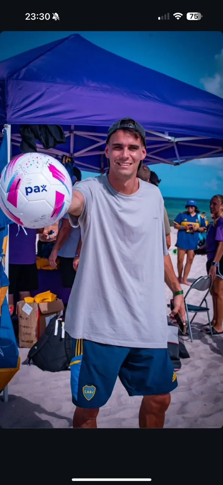

> 03 / MODO MUNDIAL
MODO


MODO
MUNDIAL.
Durante el Mundial, Un Tiro al Arco va a estar presente en Estados Unidos, generando contenidos desde la calle, las previas y los espacios donde la pasión se vive en tiempo real.
Fan zones, puntos de encuentro, alrededores de estadios y momentos de partido: Un Tiro Al Arco va a capturar la energía de los hinchas, las reacciones espontáneas y el pulso del Mundial en primera persona.
COBERTURA EN MOVIMIENTO
Contenido en calles, fan zones y puntos de encuentro donde el Mundial se vive con público real.

CLIMA DE PARTIDO
La previa, la espera, la ansiedad y las reacciones que aparecen alrededor de cada encuentro.
MIRADA DE CONTENIDO
Una cobertura espontánea, futbolera y cercana para que las marcas entren en la conversación con naturalidad.